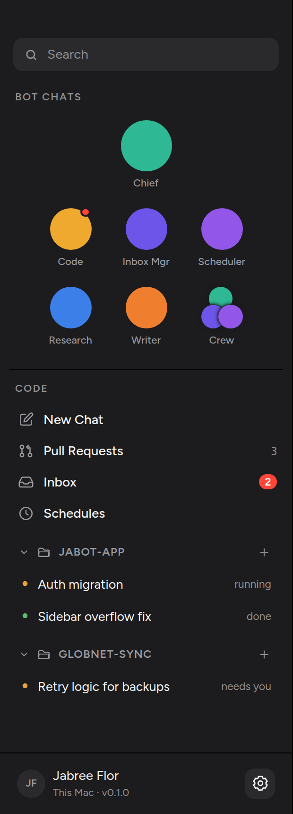
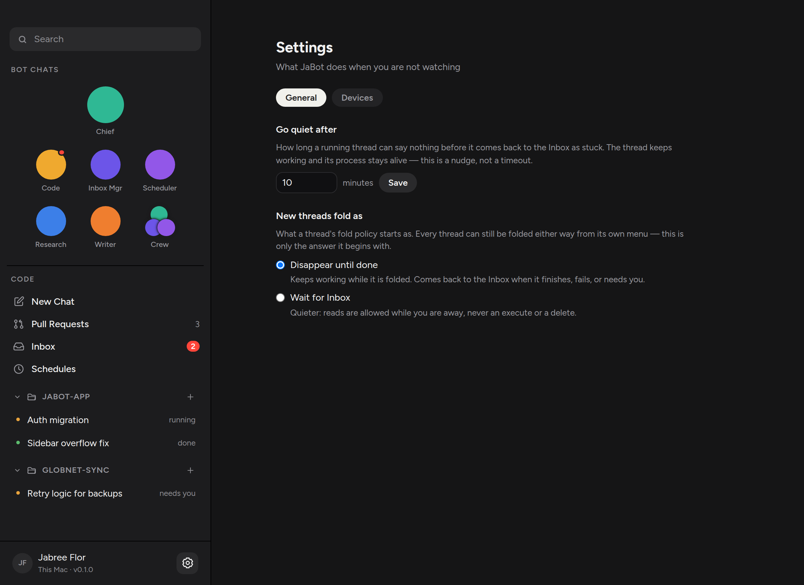
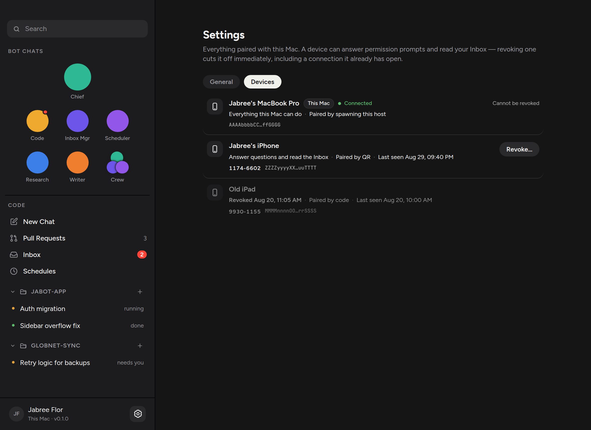

Pairing is a fact about this Mac — which phones can answer permission prompts, and which one to cut off if a phone is stolen. It used to sit as a CODE row under Schedules, which made revoke look like a daily surface. It now lives on a Devices tab inside Settings, next to General. The way in is the profile gear, which already appeared only when a host is connected.
Schedules, then folders. No Devices row. The gear on the profile footer is still how you open Settings.

The two knobs that already decided something — idle timeout and the default fold policy — stay on General. Devices is the other tab.

The same list as before: the console that cannot be revoked, a live pairing with an in-place Revoke…, and a revoked tombstone that stays on screen so “I revoked it” and “it was never there” do not look the same.

src/components/Sidebar.tsx: drops the Devices nav row.
src/views/SettingsView.tsx: adds General / Devices tabs
using the shared Tabs component.
src/views/DevicesView.tsx: the list, nested without a
second heading.
With a host connected, click the profile gear. General is selected. Arrow or click to Devices and confirm the paired list is the one that used to be its own pane. Confirm there is no Devices row under Schedules.